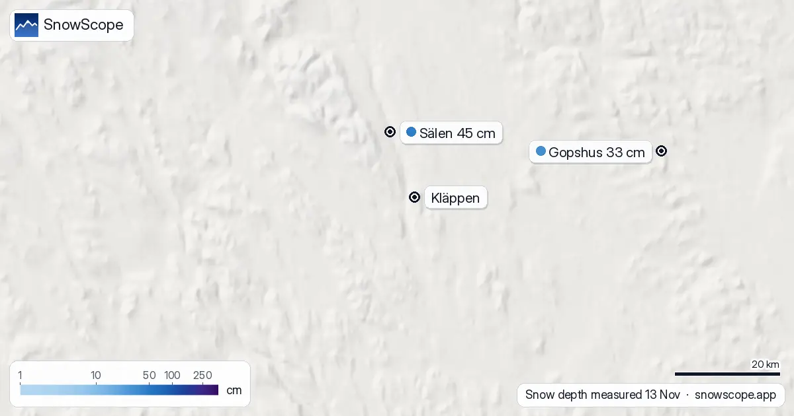

Kläppen snow depth: Sälen station jumped to 45 cm overnight, but mild air is coming (14 November 2026)
Western Dalarna got a big dose of snow in one night. The weather station in Sälen, 13 km north of Kläppen at 364 m, measured 11 cm on the morning of 12 November and 45 cm on the morning of 13 November. Malungsfors, further down the valley at 321 m, went from 5 to 21 cm, and Gopshus near Mora from 12 to 33 cm. Kläppen's own snow page reported 25 cm on its slopes the same day.
See the live snow forecast for Kläppen in the SnowScope appSnow depth, powder alerts and the 3D map, free.
Why the numbers differ
A station measures one spot in a clearing; a ski resort reports what it sees on its slopes, often after the snow has been packed. Fresh, light snow also settles fast. So 45 cm at the Sälen station and 25 cm at Kläppen are not in conflict: both say there is a real, deep cover in the area right now.
Our own estimate of the past seven days is about 20 cm of new snow at Kläppen, which is the careful end of what fell.

The week ahead is the problem
We expect almost no new snow at the base (355 m) and about 5 cm at the top (665 m) over the next seven days. In the other forecasts we compare with, nearly two thirds of the water at the base falls as rain, and the snow line climbs to about 560 to 610 m. That is near the top of the lifts.
So part of this fresh snow will probably get wet, heavy and lower over the coming days. Snow on the ground does not melt in a day, but do not plan on the 45 cm still being there next weekend.
What is normal here in November
Our 46 past winters give Kläppen a usual depth of only 6 cm on 14 November and 15 cm on 30 November. In one winter in five there is no snow at all on 14 November. So today is far above normal for the date.
December is when the base usually builds: 24 cm on 15 December in a middle winter. The record also shows the area losing snow: the middle peak was 81 cm in the first 15 winters and 58 cm in the last 15.
Is Kläppen open?
Not yet. The official season runs from 11 December 2026 to 4 April 2027, and on 13 November none of the lifts were running.
Tips for skiers
- Want to see Dalarna white this weekend? Go now: the forecast suggests the snow will soften and shrink next week.
- Wet snow on trees after a night like this can bring branches down on forest roads; drive slowly.
- For opening day, follow Kläppen's own snow page; its numbers will differ from the stations, as explained above.
More maps (external sites)
References and credits
- SMHI, open data: daily snow depth at Swedish weather stations www.smhi.se/data/meteorologi/ladda-ner-meteorologiska-observationer
- Kläppen today (official snow and lift status), read 2026-11-13 www.klappen.se/klappen-idag/
- Kläppen, official site: opening dates and lift status, read 2026-11-13 www.klappen.se/om-klappen/oppettider/
About these numbers
Measured snow: morning readings of 13 November 2026 at the official weather stations of Sweden (SMHI open data), Finland (FMI open data, CC BY 4.0) and Norway (MET Norway station reports, CC BY 4.0, as published by Ogimet). Norway's national snow map seNorge (NVE and MET Norway, NLOD) gives the estimates on a 1 km grid for the slopes. Our numbers: SnowScope's forecast for the next seven days at three heights of the ski area, compared with independent forecasts (ECMWF, ICON, GFS, GEM) for 14 to 20 November; snow history of 46 past winters (1980-81 to 2025-26), a model of the past corrected for height. Opening dates: the resorts' own pages, read on 13 November 2026. Run length and lift count: OpenSkiMap mapping.
Official avalanche bulletins: Lavinprognoser (Naturvårdsverket)
Cite this report
For research, teaching or the press: the numbers and charts are free to reuse under CC BY 4.0 with this citation.
SnowScope (2026), Kläppen snow depth: Sälen station jumped to 45 cm overnight, but mild air is coming (14 November 2026), https://snowscope.app/blog/en/2026/11/klappen-snow-depth-14-november-2026.html, accessed 2026-11-14
SnowScope (Atlas Labs). (2026, November 14). Kläppen snow depth: Sälen station jumped to 45 cm overnight, but mild air is coming (14 November 2026). SnowScope snow reports. https://snowscope.app/blog/en/2026/11/klappen-snow-depth-14-november-2026.html
BibTeX
@misc{snowscope2026klappensnowdepth14novemb,
author = {{SnowScope (Atlas Labs)}},
title = {Kläppen snow depth: Sälen station jumped to 45 cm overnight, but mild air is coming (14 November 2026)},
year = {2026},
month = nov,
howpublished = {\url{https://snowscope.app/blog/en/2026/11/klappen-snow-depth-14-november-2026.html}},
note = {Published 2026-11-14 13:59 UTC; accessed 2026-11-14}
}· CC BY 4.0 · Methods, data and tools →
Kläppen: snow and temperature by height, this winter vs last (tools) →
Follow Kläppen
Free: a message when fresh snow is coming, and the forecast every morning.
More snow reports

Measured snow in Oulu on 13 November 2026: 7 cm at Kaukovainio, 5 cm on Hailuoto, 8 cm at Ruukki, all new since Thursday. A little more on the way before Monday's thaw.

Measured snow around Östersund on 13 November 2026: 19 cm at Norderön, 24 cm at Marby, 33 cm at Rissna. Three to four times the usual depth for the date, with a cold, dry weekend ahead.

Measured snow depth in Oslo on 13 November 2026: 4 cm at Blindern, 31 cm at Bjørnholt and 37 cm at Tryvannshøgda. What a normal mid-November looks like, and what the weekend does to it.